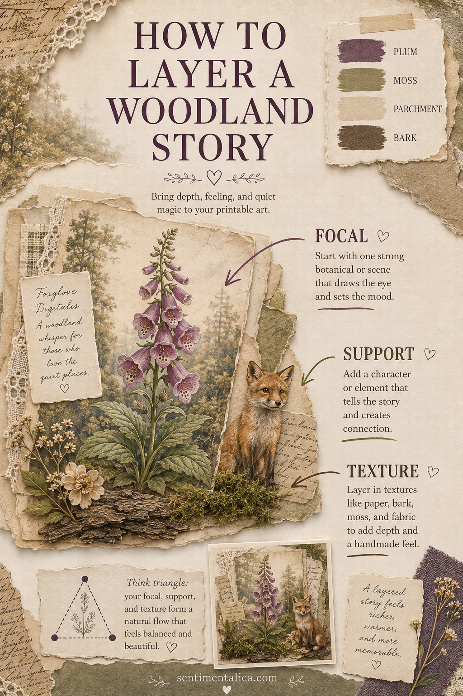
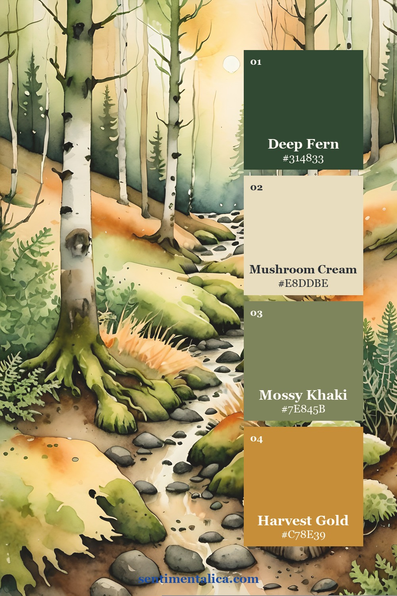
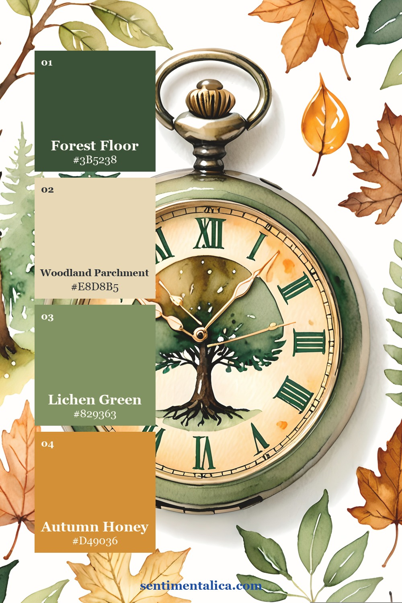
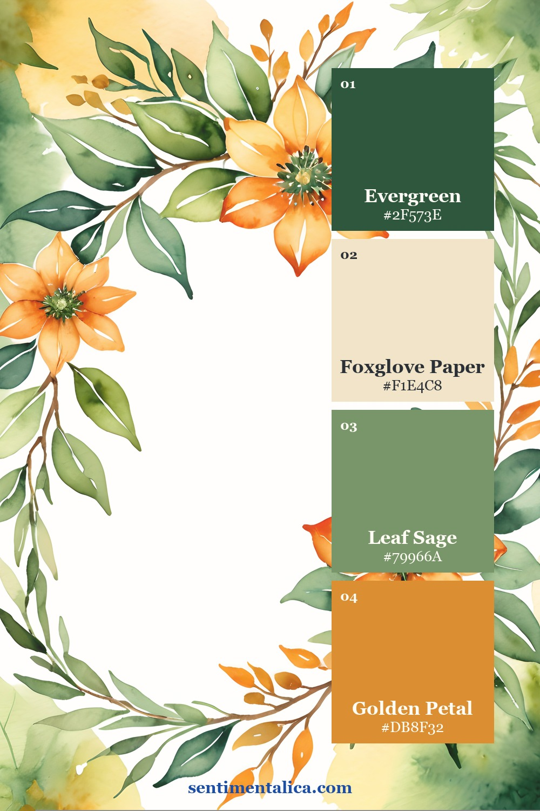
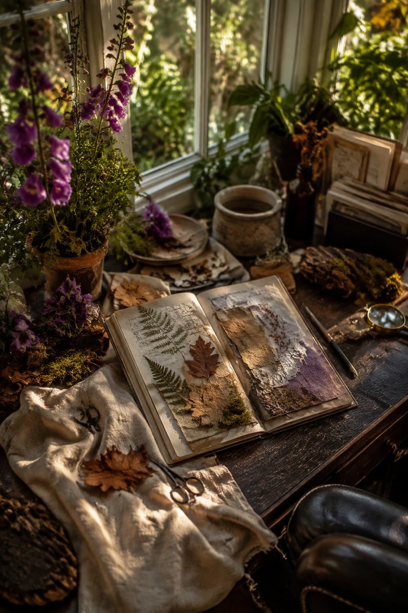

Woodland collage becomes convincing when the elements feel as if they inhabit the same little world. Instead of placing flowers, animals and textures in separate rows, connect them with overlap and a simple triangular flow. Foxglove Hollow supplies all three roles: tall botanicals, characterful woodland imagery and quiet forest detail.

Use a triangle, not a stripe
Choose the tallest botanical as the focal image and place its strongest detail near the upper third of the page. Put the smaller character or narrative element lower and to one side. Finish the triangle with a small repeat—one torn purple scrap, label or dried-flower shape—on the opposite side.
This arrangement lets the eye travel. A straight horizontal row tends to feel like separate stickers; the triangle makes the pieces feel related.
Let the palette control the materials

For the first palette, use parchment as open space, moss as the main support color and plum as the smallest accent. Bark brown belongs on edges, shadows and stitching.

The second palette is useful for a deeper forest page. Pair it with tea-dyed paper and one rough natural fiber, but keep lace or pale paper nearby so the spread does not become muddy.

The third option feels more botanical. It suits specimen labels, nature notes and a page with a pressed-leaf silhouette. Repeat purple only twice: once in the focal flower and once in a very small balancing detail.
Build the collage from back to front
Begin with the quietest texture and tear it into an irregular shape. Add the focal botanical so part of it crosses the texture edge. Tuck the supporting character into the lower overlap, as though it belongs inside the scene rather than sitting beside it. Add one narrow strip of writing paper where the eye naturally pauses.
If the page feels scattered, do not add another embellishment. Increase one overlap or repeat one existing color. Connection is usually the missing ingredient.

The finished spread should feel discovered: one strong botanical, one small presence in the woods, and enough quiet paper for the viewer to imagine what happened there.